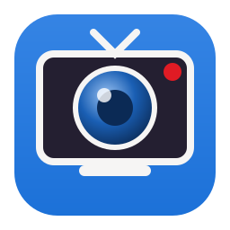
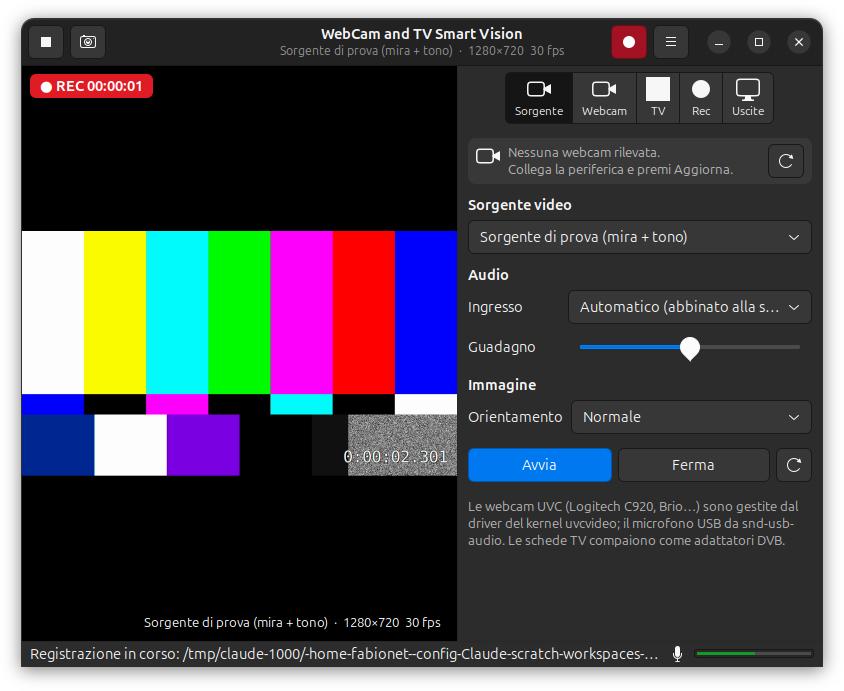
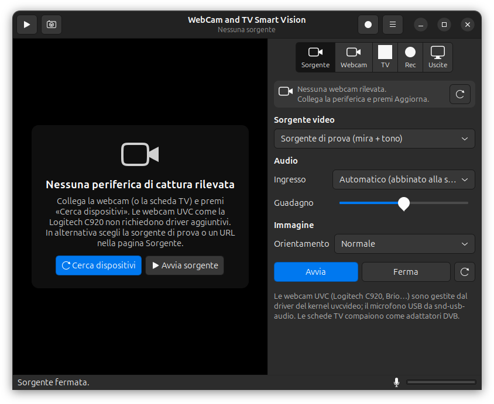
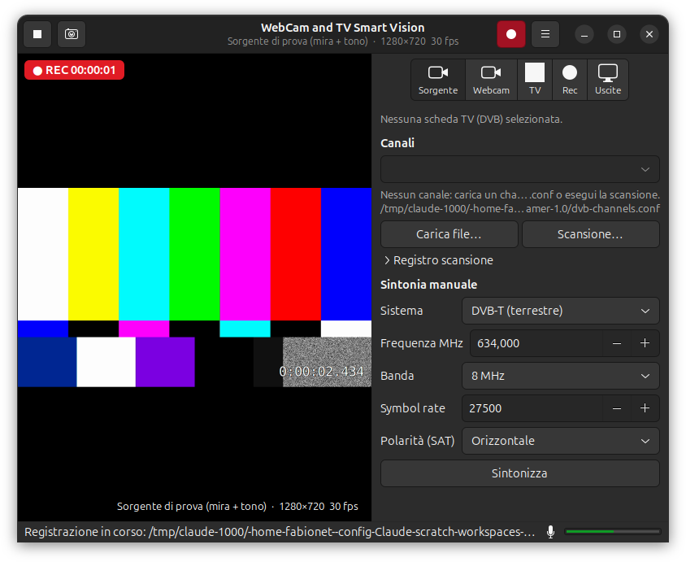
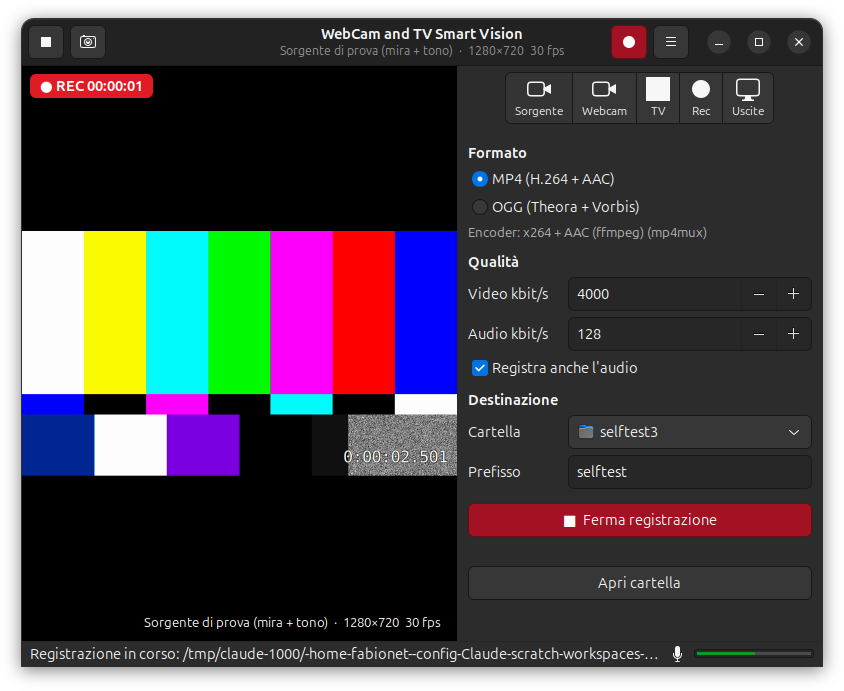
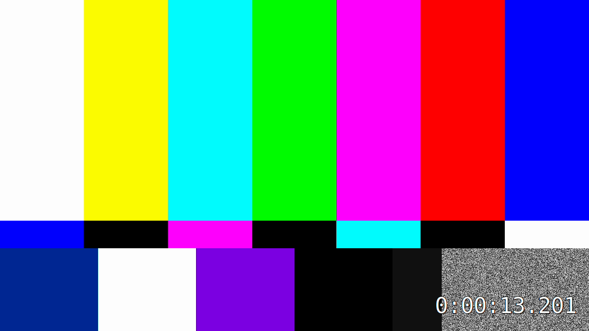
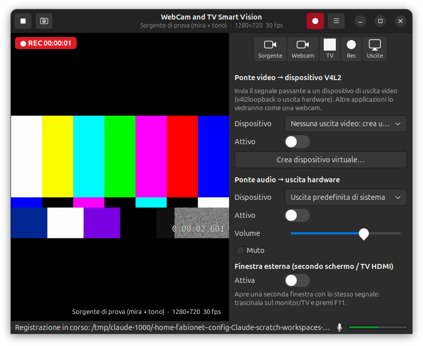

WebCam and TV Smart Vision è un'applicazione per il desktop GNOME, scritta in C++ con GTK e GStreamer. Riunisce in una sola finestra di 800×600 pixel:
| Sistema | Debian 12 o 13, Ubuntu 22.04 o 24.04 e tutte le derivate (Linux Mint, Pop!_OS, Zorin, elementary, MX Linux, Kubuntu…). Desktop GNOME consigliato; funziona anche su altri desktop con GTK 3. |
|---|---|
| Webcam | Qualsiasi webcam UVC (USB Video Class): Logitech C920, C920 HD Pro, C922, Brio 4K, StreamCam e la quasi totalità delle webcam USB in commercio. |
| Schede TV | Adattatori DVB-T/T2, DVB-C, DVB-S/S2 riconosciuti dal kernel Linux (compaiono come /dev/dvb/adapterN). |
| Software | GStreamer 1.16 o successivo con i set di plugin base, good, bad, ugly e libav (installati automaticamente dal pacchetto .deb). |
uvcvideo (video) e snd-usb-audio (microfono). Collegare la webcam è tutto ciò che serve. Nota: la C920 è una webcam Full HD 1080p; il modello Logitech 4K si chiama Brio e funziona allo stesso modo.https://github.com/fabionet/webcam-tv-smart/releases.sudo apt install ./webcam-tv-smart-vision_1.1.0_ubuntu24.04_amd64.deb| Distribuzione (e derivate) | Pacchetto da scaricare |
|---|---|
| Debian 12 "bookworm" – MX Linux 23 | …_debian12_amd64.deb |
| Debian 13 "trixie" | …_debian13_amd64.deb |
| Ubuntu 22.04 – Linux Mint 21 – Pop!_OS 22.04 – Zorin 17 – elementary 7 | …_ubuntu22.04_amd64.deb |
| Ubuntu 24.04 – Linux Mint 22 – Zorin 18 | …_ubuntu24.04_amd64.deb |
apt installa da solo le dipendenze (GStreamer, GTK). Al termine trovi WebCam and TV Smart Vision nel menu delle applicazioni; da terminale il comando è webcam-tv-smart-vision.
| Pacchetto | A cosa serve |
|---|---|
dvb-tools | Scansione dei canali TV con dvbv5-scan (pagina TV, tasto Scansione). |
v4l-utils | Lo script che imposta i valori consigliati della C920 al collegamento (regola udev). |
v4l2loopback-dkms | Webcam virtuale per il ponte video, se il kernel non include già il modulo. |
gstreamer1.0-pipewire | Elenco dei dispositivi audio con PipeWire (predefinito su Ubuntu 22.10+ e Debian 12+). |
sudo apt install dvb-tools v4l-utils v4l2loopback-dkms gstreamer1.0-pipewireCrea il collegamento stabile /dev/webcam-c920 e applica i valori consigliati (anti-sfarfallio 50 Hz, esposizione automatica, autofocus) ogni volta che colleghi la webcam:
sudo cp /usr/share/webcam-tv-smart-vision/99-logitech-c920-smartvision.rules /etc/udev/rules.d/
sudo udevadm control --reloadAll'avvio l'applicazione cerca le periferiche di cattura collegate. Il nome della periferica compare in tre punti: nella barra in alto della pagina Sorgente, nel sottotitolo della finestra e nell'angolo in basso dell'anteprima (insieme a risoluzione e fotogrammi al secondo).

Quando una webcam è presente, la barra mostra il suo nome (per esempio HD Pro Webcam C920) e l'anteprima parte. Se l'ultima periferica usata non è più collegata, l'applicazione non passa in silenzio alla sorgente di prova: mostra l'avviso Periferica non rilevata con il nome ricordato, così sai subito che cosa manca.
| Elemento | Funzione |
|---|---|
| ▶ / ■ (in alto a sinistra) | Avvia o ferma la sorgente selezionata. |
| 📷 (in alto a sinistra) | Scatta un'istantanea PNG nella cartella di destinazione (Ctrl+S). |
| ● rosso (in alto a destra) | Avvia o ferma la registrazione (Ctrl+R). Diventa rosso pieno mentre registra. |
| ☰ menu | Aggiorna dispositivi, Apri cartella registrazioni, Schermo intero, Informazioni. |
| Schede Sorgente · Webcam · TV · Rec · Uscite | Le cinque pagine della barra laterale, descritte nei capitoli seguenti. |
| Barra di stato | Ultimo messaggio (file salvato, errori, periferiche trovate) e indicatore del livello del microfono. |
La finestra parte a 800×600 ma si può ingrandire liberamente: l'anteprima occupa tutto lo spazio disponibile mantenendo le proporzioni. Con F11 l'anteprima va a schermo intero e la barra laterale scompare; Esc torna indietro.
| Comando | Descrizione |
|---|---|
| Barra periferica + ⟳ | Nome della webcam rilevata (o avviso) e tasto di nuova ricerca. |
| Sorgente video | Elenco di tutto ciò che è collegato: webcam (con il nodo /dev/videoN), schede TV, Flusso di rete / file (URL) e Sorgente di prova (mira colorata con tono a 440 Hz, utile per provare registrazione e uscite senza hardware). |
| Formato | Solo per le webcam: codifica, risoluzione e fotogrammi al secondo offerti dal dispositivo (es. MJPG 1920x1080 @ 30 fps). Automatico sceglie MJPEG 1280×720 a 30 fps, il miglior compromesso tra qualità e carico USB. La scelta viene ricordata per ogni webcam. |
| URL | Per i flussi di rete: rtsp://…, http://…, file:///…. Premi Invio per avviare. |
| Ingresso audio | Automatico abbina il microfono della webcam (riconosciuto dal nome, es. "C920"); Audio della sorgente usa l'audio del canale TV o del flusso; Nessun audio; oppure un microfono specifico. |
| Guadagno | Amplificazione del microfono (1,0 = invariato); agisce anche sulla registrazione. |
| Orientamento | Normale, specchiata, capovolta, ruotata di 90° o 180°: utile per webcam montate al contrario o per vedersi come allo specchio. |
| Avvia / Ferma / ⟳ | Controllo manuale della sorgente e aggiornamento dell'elenco. |
I controlli vengono letti direttamente dal dispositivo tramite l'interfaccia V4L2 del kernel, quindi l'elenco dipende dal modello. Per la Logitech C920 trovi tipicamente:
| Controllo | Consiglio d'uso |
|---|---|
| Brightness, Contrast, Saturation, Sharpness | Regolazioni dell'immagine; il segno sotto ogni cursore indica il valore predefinito. |
| Power Line Frequency | Imposta 50 Hz in Italia ed Europa per eliminare lo sfarfallio delle luci artificiali. |
| White Balance (automatic / temperature) | Lascia l'automatico; disattivalo e scegli la temperatura solo con luci colorate. |
| Auto Exposure / Exposure Time | "Aperture Priority" = automatico. In manuale puoi fissare il tempo di esposizione per evitare variazioni di luminosità durante lo streaming. |
| Focus, Automatic Continuous / Focus, Absolute | Disattiva l'autofocus continuo per riprendere documenti o oggetti vicini senza "pompaggio" della messa a fuoco; poi regola il fuoco assoluto. |
| Zoom, Absolute · Pan · Tilt | Zoom digitale fino a 5× e spostamento dell'inquadratura all'interno del sensore. |

/usr/share/dvbv5/dvb-t/it-… oppure it-All). Richiede il pacchetto dvb-tools. La scansione dura qualche minuto; il registro è visibile nell'espansore Registro scansione.Se hai già un file channels.conf (formato classico "zap" oppure DVBv5, generato da w_scan, dvbv5-scan, Kaffeine…), premi Carica file….
Per un singolo multiplex di cui conosci i parametri: scegli il Sistema (DVB-T, T2, C, S, S2…), inserisci la frequenza in MHz (per esempio 634 per il canale UHF 40), la banda (8 MHz per il terrestre europeo), per il satellite il symbol rate in kBd e la polarità, poi premi Sintonizza. Viene riprodotto il primo programma del multiplex.

| Impostazione | Descrizione |
|---|---|
| MP4 (H.264 + AAC) | Formato universale, leggibile ovunque (telefoni, TV, YouTube). Encoder x264 (o VA-API/OpenH264 se x264 manca). |
| OGG (Theora + Vorbis) | Formato completamente libero da brevetti. Theora è più lento: a 1080p su PC modesti alcuni fotogrammi possono essere saltati. |
| Video kbit/s | Qualità video. Valori indicativi: 2500 per 720p, 4000–6000 per 1080p. |
| Audio kbit/s | 128 è la qualità standard, 192–256 per musica. |
| Registra anche l'audio | Se disattivato il file contiene solo video. |
| Cartella · Prefisso | I file si chiamano Prefisso-AAAAMMGG-HHMMSS.mp4 (o .ogg, .png per le istantanee). Cartella predefinita: Video. |


Il "ponte" prende il segnale che vedi nell'anteprima (qualunque sia la sorgente: webcam, TV, URL) e lo inoltra in tempo reale, senza interrompere anteprima o registrazione, verso una o più uscite.
v4l2loopback. Compare /dev/video10 "SmartVision Output" nell'elenco. Se il modulo manca: sudo apt install v4l2loopback-dkms.Se possiedi una scheda con un'uscita video V4L2 hardware, compare nello stesso elenco.
Scegli la destinazione (altoparlanti, HDMI/DisplayPort del televisore, cuffie) e attiva. Volume e Muto agiscono solo su questo ponte: la registrazione resta al livello originale. Con una webcam, attiva il ponte audio solo in cuffia per evitare il ritorno (eco).
Attivando l'interruttore si apre una seconda finestra con lo stesso segnale. Trascinala sul monitor o sul televisore collegato e premi F11 (o F) per lo schermo intero; Esc esce. Chiudendo la finestra l'interruttore si spegne da solo.
| Tasti | Azione |
|---|---|
| Ctrl+R | Avvia / ferma la registrazione |
| Ctrl+S | Istantanea PNG |
| F11 | Anteprima a schermo intero (anche nella finestra esterna) |
| Esc | Esce dallo schermo intero |
| Invio nel campo URL | Avvia il flusso di rete |
webcam-tv-smart-vision --version | Stampa la versione. |
webcam-tv-smart-vision --self-test /tmp/prova | Auto-test senza hardware: avvia la mira, registra un MP4 e un OGG di circa 4 secondi, scatta un'istantanea, salva le schermate di tutte le pagine ed esce. Utile per verificare che codec e plugin siano installati. |
Le impostazioni (sorgente, formato, cartella, bitrate, uscite…) sono salvate in ~/.config/webcam-tv-smart-vision/settings.ini.
| Sintomo | Che cosa fare |
|---|---|
| "Nessuna periferica di cattura rilevata" | Controlla cavo e porta USB, premi Cerca dispositivi. Da terminale ls /dev/video* deve mostrare almeno un nodo e lsusb la webcam. Se il nodo esiste ma l'app non lo vede, verifica che il tuo utente possa accedervi (gruppo video o regola udev con uaccess). |
| "La sorgente non si avvia (dispositivo occupato…)" | Un'altra applicazione (browser, videoconferenza, OBS) sta usando la webcam. Chiudila o usa il ponte video per condividere il segnale. |
| Anteprima a scatti o lenta | Scegli un formato MJPG invece di YUYV (molto più leggero sul bus USB), collega la webcam direttamente al PC e non a un hub, riduci la risoluzione. |
| Immagine che sfarfalla | Pagina Webcam → 50 Hz (Power Line Frequency). |
| Nessun audio nella registrazione | Pagina Sorgente → Ingresso: scegli esplicitamente il microfono. La barra di stato avvisa se la registrazione parte senza audio. Verifica l'indicatore del livello in basso a destra. |
| Registrazione OGG con fotogrammi mancanti | Theora è lento: scegli 720p o passa a MP4. |
| "Nessun encoder H.264 disponibile" | sudo apt install gstreamer1.0-plugins-ugly gstreamer1.0-libav |
| Scheda TV non elencata | Verifica ls /dev/dvb; molte schede richiedono il firmware (sudo apt install firmware-linux-nonfree su Debian, abilitando la sezione non-free). Controlla dmesg | grep -i dvb. |
| "dvbv5-scan non trovato" | sudo apt install dvb-tools |
| Nessun dispositivo di uscita video | Pagina Uscite → Crea dispositivo virtuale…; se il modulo manca: sudo apt install v4l2loopback-dkms. |
| Anteprima vuota ("Plugin gtksink mancante") | sudo apt install gstreamer1.0-gtk3 |
Per un rapporto dettagliato lancia l'app da terminale con GST_DEBUG=2 webcam-tv-smart-vision e allega l'output a una segnalazione su GitHub.
sudo apt install build-essential cmake ninja-build pkg-config libgtk-3-dev \
libgstreamer1.0-dev libgstreamer-plugins-base1.0-dev \
gstreamer1.0-plugins-good gstreamer1.0-plugins-bad gstreamer1.0-plugins-ugly \
gstreamer1.0-libav gstreamer1.0-gtk3
git clone https://github.com/fabionet/webcam-tv-smart.git
cd webcam-tv-smart
./build.sh # compila in build/
./build.sh install # installa in /usr/local con voce di menu e icona
./build.sh deb # crea il pacchetto .deb per la distribuzione in uso, in dist/Per creare il pacchetto di un'altra distribuzione serve Docker o Podman: packaging/build-deb-in-container.sh debian:12. I pacchetti ufficiali vengono compilati da GitHub Actions nei container di Debian 12, Debian 13, Ubuntu 22.04 e Ubuntu 24.04 a ogni versione (tag vX.Y.Z) e pubblicati nella pagina Releases.
src/pipeline.* | Pipeline GStreamer: sorgente → tee → anteprima, registrazione (rami dinamici con finalizzazione EOS), uscite ponte. |
src/device_manager.* | Enumerazione di webcam (V4L2), schede DVB, dispositivi audio e hot-plug. |
src/v4l2_device.* | Formati e controlli della webcam tramite ioctl V4L2. |
src/dvb.* | Adattatori DVB e lettura di channels.conf. |
src/app_window.* | Interfaccia GTK3, pagine, azioni e auto-test. |
WebCam and TV Smart Vision è software libero distribuito con licenza GNU GPL 3.0 o successiva. © 2026 Fabio Avallone.